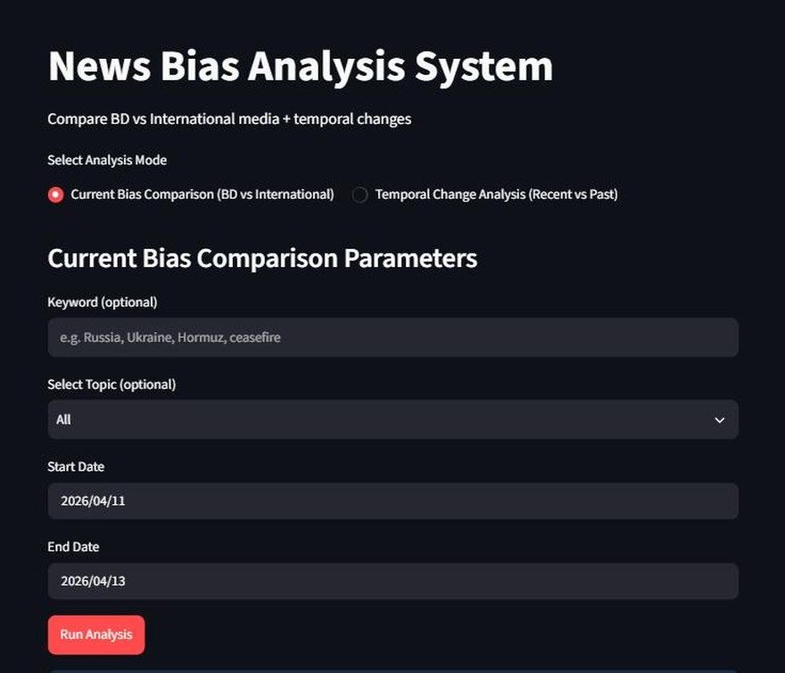

Data Scientist · Copenhagen · Open to roles across Denmark
Rakib Hasan.
I take messy data, find the signal, and ship the product.
MSc in Business Data Science (Aalborg University) on top of five years of hands-on data work. I build NLP/LLM pipelines, forecasts, and data products, and I don't call them done until they're deployed and used.
Work that shipped.
Reading bias at scale.
Media bias is easy to sense and hard to measure. For my master's thesis I built a system that does it every single day, across outlets, at article level, and serves the results live.
Bias in geopolitical news coverage is discussed constantly but rarely quantified. Manual analysis doesn't scale past a handful of articles.
An end-to-end Python pipeline: source-specific scrapers (BBC, The Guardian, Daily Star, New Age) run daily via GitHub Actions, feeding a continuously updating corpus. TF-IDF retrieval pairs comparable coverage; GPT-4o scores framing, selection/omission, sourcing and tonal bias.
A living corpus of 6,500+ scored articles and an interactive Streamlit app where anyone can compare outlets and time periods, running unattended, updating itself every day.
Python · Pandas · GPT-4o · TF-IDF · GitHub Actions · Streamlit · trafilatura

Analyst's discipline, builder's instinct.
During my MSc in Business Data Science at Aalborg University I focused on applied machine learning, NLP & network analysis, deep learning, data governance and data engineering & MLOps, then put it into practice with a thesis that scores thousands of news articles a day and serves the results live.
Before that: five years owning operational databases end-to-end, building the dashboards and reports management relied on daily, and learning first-hand what happens to a business when data isn't accurate or trusted. That is the lens I bring to data science; I care as much about the pipeline as the model at the end of it.
- P.01Clarity before complexity.
- P.02A model no one uses is a prototype.
- P.03Trust is built in the pipeline.
- P.04Ship, then improve.
- Location
- Copenhagen, Denmark
- Education
- MSc Business Data Science, Aalborg University (2026)
- Focus
- ML & AI · NLP/LLMs · Pipelines · MLOps · Forecasting
- Languages
- English (fluent) · Danish (learning)
What I work with.
Python and SQL for everything from cleaning to feature engineering.
Python · Pandas · NumPy · SQL · Feature engineering
Classical ML, forecasting, and LLM workflows that reach production.
Scikit-learn · Time-series · NLP · RAG · LangChain · Ollama · Prompting
From exploratory plots to the reports management actually reads.
Matplotlib · Seaborn · Streamlit · Excel · Management reporting
Scrapers and CI that keep datasets alive without me touching them.
Requests · BeautifulSoup · Playwright · trafilatura · GitHub Actions
Where I've worked.
Assistant Manager V. A. Transport Agency
- Owned the company's operational databases end-to-end, safeguarding the accuracy and consistency behind every team's reporting.
- Built recurring dashboards and reports that became management's standard basis for day-to-day logistics decisions.
- Analysed operational data to surface inefficiencies, streamlining scheduling and workflows with cross-functional teams.
Senior Officer V. A. Transport Agency
- Maintained operational records and service data supporting planning, follow-up and cross-team communication.
- Coordinated transport operations, customer communication and documentation; improved reporting processes.
Part-time Sushi Chef Karma Sushi & Catch Sushi Bar, Aalborg
Kitchen work in a Danish team alongside a full-time MSc: time management, quality control, composure under pressure.
Academic background.
MSc in Business Data Science Aalborg University, Denmark
Thesis: AI-assisted media bias detection using NLP and LLM-based analysis. Coursework across applied ML, NLP & network analysis, deep learning & AI, data-driven business modelling, data governance & ethics, and data engineering & MLOps.
BBA, Management Information Systems University of Dhaka
Data-driven decision-making, information systems, business strategy and leadership. Where the business-first lens on data started.
Outside the notebook.
Volunteering Cross-Cultural Trainers (CCT) & ICYE Denmark, community and intercultural engagement (2025 - present). Buddy in Aalborg University's International Buddy Program, Sep 2025 - Feb 2026 certificate ↗.
Leadership General Secretary, MIS Hub 71 · Organizing Secretary, MIS Debating Club · Head, MIS Cultural Wing.
Off hours Nature walks · Photography · Travelling · Reading.
Let's build something
that ships.
Open to data scientist, data analyst and ML/NLP/AI roles in Copenhagen and beyond. I usually reply within a day.